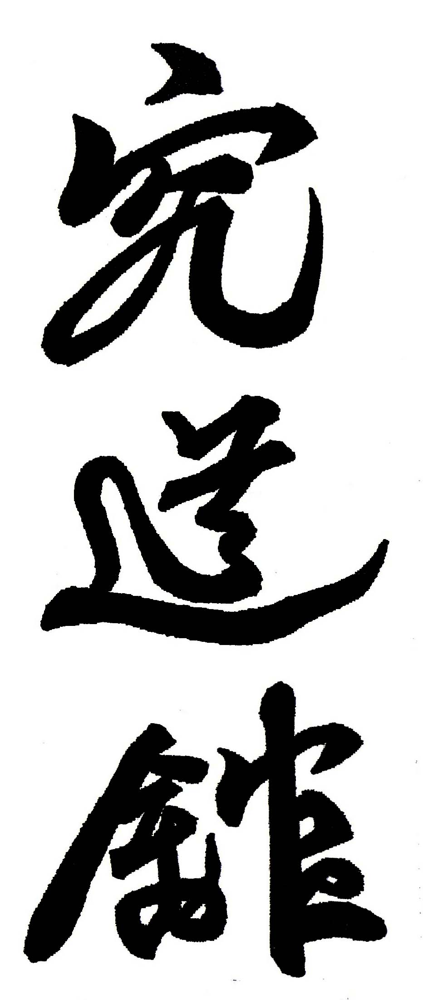
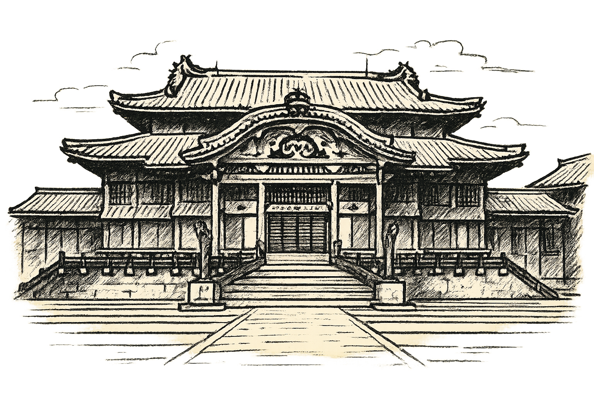
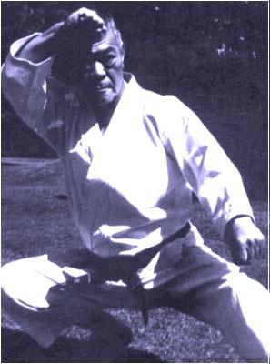
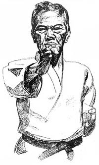
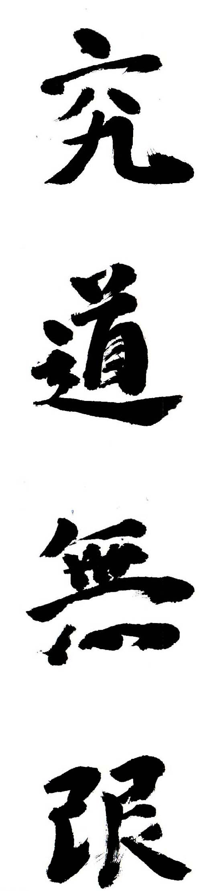

Karate-do Shorinryu Kyudokan de Okinawa — filial Campana, Buenos Aires
Una escuela transmitida de generación en generación desde Shuri.
Esta es su historia. El próximo capítulo puede ser tuyo.
Sumate al dojo
Todo comenzó en Shuri


En Shuri, la antigua capital de Okinawa, tuvo origen el Shuri-te — «la mano de Shuri»—, raíz de la antigua escuela Shorin. Sobre esa base, el maestro Yuchoku Higa fundó el Karate-do Kyudokan.
Es una escuela poco común: tradicional y evolutiva a la vez. Transmitida de generación en generación a lo largo de los siglos, ha enriquecido constantemente su contenido técnico sin perder jamás su esencia original.
1938: el karate llega a la Argentina


Jintatsu Higa comenzó a practicar el arte a los doce años y le dedicó el resto de su vida. En 1938 arribó a la Argentina; en 1940 realizó, en un cine de Burzaco, la primera exhibición de karate de la historia del país.
Fue fundador y primer presidente de la Asociación Shorinryu Karate-do de Okinawa. De esa obra nace toda la línea que esta historia recorre.
Una escuela de familia


El Kyudokan no está administrado por una institución: lo conduce la familia Higa. Por ello se lo conoce, en todo el mundo, como el Karate-do de los Higa.
Y en Campana, la cadena continúa

En Campana, la cadena continúa: el profesor Cristian Lugani enseña el estilo tal como le fue transmitido. El dojo está acá:
Jean Jaures 983 · Campana · Bs. As.
cristian@karatelugani.com.ar
| 13:30 | Mar · Jue | Karate |
|---|---|---|
| 17:00 | Sáb | Karate |
| 18:30 | Mar · Jue | Karate niños |
| 20:30 | Mar · Jue | Karate |
El próximo capítulo es tuyo.
Sumarse al dojo
«La Vía del estudio no tiene fin. La Vía del Karate es inmensamente amplia, profunda y alta como el cielo que continúa sin límites.» — Kuydo Mugen